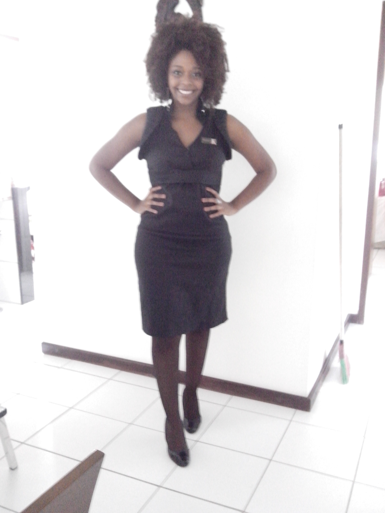
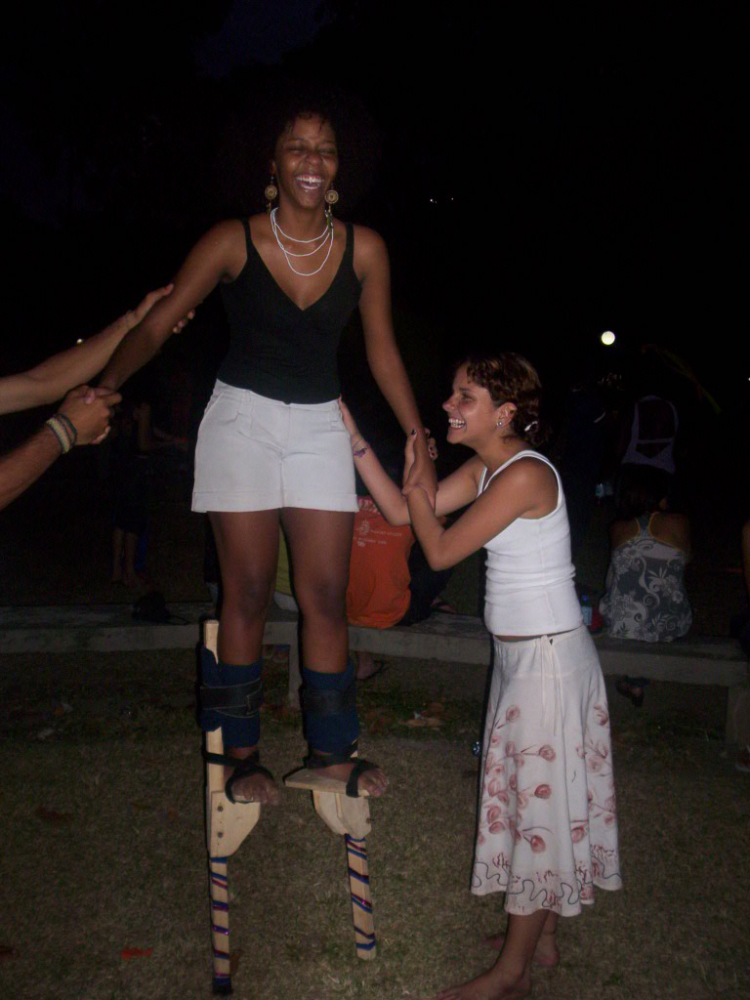

Minha vida daria um livro... Mas não é!
Minha vida sempre foi muito ligada às artes, à música e às letras.
Foi por isso que desde cedo fiz aulas de dança, teatro e aos 12 anos fiz minha primeira participação em vídeo publicitário,
durante toda a adolescência trabalhei com promoção de eventos, produtos e gravação de comerciais.
Estas experiências de vida me tornaram uma pessoa, que apesar de tímida, conseguia se comunicar muito bem, por isso minhas aptidões
sempre apontavam para a área comunicação.


Em 2012 me formei em Comunicação social com especialidade em Jornalismo e desde então trabalhei em várias empresas, no Brasil e em Angola, e com cargos diferentes, sempre dentro da área de Comunicação. Em 2018 iniciei o mestrado em Comunicação Política, pela Universidade do Porto, mas não conclui porque um ano depois aceitei uma proposta para trabalhar numa grande empresa de comunicação brasileira, A Rede Globo, onde tive a oportunidade de passar também por doversas áreas como repórter, produção, edição de texto e imagem. Em 2022 voltei a Portugal onde vivo e já pude trabalhar também com vendas e na área operacional de uma grande fábrica. Hoje procuro conhecer autras áreas me atualizar para poder me inserir com melhores qualificações no mercado de trabalho português.